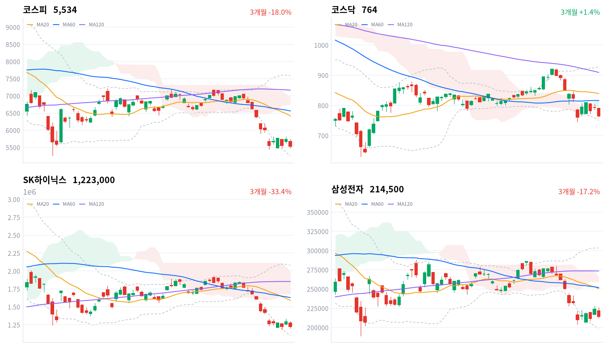

직전 미국장은 올랐지만 아시아 증시가 AI·반도체 매도로 함께 내렸고, 코스피는 그 평균보다 더 밀려 전날 반등분을 하루 만에 반납했다. SK하이닉스·삼성전자가 낙폭을 이끌었고, CATL 실적 부진에 2차전지와 정유주도 크게 내렸다.
아시아 평균을 넘는 낙폭은 두 회사의 자사주 매입이 끝나 매수 주체가 비어 버린 국내 수급 공백의 몫으로 판단한다. 외국인은 순매수를 지켰고(당일 잠정), 이 공백을 메울 재료는 10월 28일 SK하이닉스 실적과 주주환원 발표에서 확인한다.
코스피가 아시아 네 지수 평균보다 1.28%포인트 더 내렸고, 낙폭은 SK하이닉스(-5.49%)와 삼성전자(-4.03%)에 몰렸다. SK하이닉스가 40조원 자사주 매입을 마친 뒤 맞은 첫 세션이었다. 기관이 4,604억원을 순매도한 반면 외국인은 653억원 순매수를 지켰다(당일 잠정).
장 마감 뒤 보도는 미국 기술기업 실적 뒤 커진 AI 투자 수익성 경계, 반도체 두 회사의 자사주 매입 종료에 따른 수급 공백, 외국인 매도를 함께 원인으로 든다. 수급 공백이라는 설명에는 동의한다. 다만 외국인 매도라는 설명은 마감 잠정치와 다르다. 외국인은 장중 한때 크게 팔았다가 순매수로 마감했고, 지수를 끌어내린 매도는 기관에서 나왔다. 그래서 오늘 하락은 외국인이 다시 판 결과가 아니라 매물을 받아 줄 매수 주체가 비어 있었던 결과로 본다.
아시아 평균만큼의 하락은 AI 과잉투자 우려라는 공통 재료가, 그 위의 추가 낙폭은 국내 반도체의 매수 공백이 만들었다고 판단한다. 두 회사의 자사주 매입은 두 달 동안 외국인 매도 물량을 받아 왔고, 그 매수가 끝난 첫날 두 종목은 대만가권보다 두세 배 크게 내렸다. 반도체 비중이 큰 코스피의 지수 구성 탓에 같은 아시아 매도가 더 크게 나타났을 수도 있다. 그 설명이 맞다면 아시아 반도체가 회복할 때 코스피도 함께 회복하고 추가 약세는 이어지지 않는다. 우리 해석에도 어긋나는 관측이 하나 있다. 매수 공백은 외국인이 다시 팔 때 가장 크게 드러나야 하는데, 오늘 외국인은 순매수했다. 두 설명은 10월 23일·26일·27일 세 세션의 아시아 대비 코스피 상대수익률 합계로 확인한다.
하루 급락만으로 외국인 매도가 다시 시작됐다고 보기는 이르고, 새로 제안할 상품은 없다. 오늘 한국 반도체의 추가 약세는 반도체 업종 전체의 이익 전망이 나빠졌다는 신호로 보지 않는다. 이 공백을 메울 가장 가까운 재료는 10월 28일 SK하이닉스 3분기 실적과 함께 나올 추가 주주환원 방안이다.
코스피가 10월 22일 기준 20일 저점 5,451 아래로 마감하면, 오늘 하락이 매수 공백에 따른 일시적 충격이 아니라 하락 추세의 재개였던 것으로 보고 외국인 매도 소진 판단을 철회한다. 이 레벨은 오늘 종가보다 약 1.5% 아래이고, 오늘 장중 저점은 그 35포인트 위에서 멈췄다. 그 밑으로는 같은 날 기준 볼린저 밴드 하단(5,239)이 있다.
출처: 이투데이, 데일리굿뉴스, 한국경제TV, 뉴스웍스
직전 10월 21일 미국 세션은 S&P500이 0.58%, 나스닥이 1.05% 올라 강했다. 그러나 오늘 아시아는 항셍(-3.03%)과 닛케이(-2.65%)를 비롯해 네 지수가 모두 내려 평균 2.24% 떨어졌다. AI 과잉투자 우려 속에 일본에서도 AI·반도체주가 팔렸고, 키옥시아가 7% 가까이 내렸다는 보도가 나왔다. 코스피는 아시아 평균보다 1.28%포인트 더 내렸다.
코스피는 전일 종가(5,736)보다 1.1% 낮은 5,670에서 출발했다. 미국 장 마감 뒤 나온 테슬라 3분기 실적에 대한 시간외 반응은 매체마다 엇갈렸고, 한국 정규장 동안 S&P500 선물은 0.44%, 나스닥 선물은 0.85% 내렸다. 장중 매수를 받쳐 줄 해외 재료는 없었다.
코스피는 하루 범위(254포인트)의 아래쪽에서 마감했다. 장중 저점 5,486보다 48포인트 높고, 장 초반 고점 5,740보다 207포인트 낮다. 코스닥도 저점(762) 바로 위인 764에서 끝났다. 원화는 장중 강세였다.
지수를 끌어내린 것은 반도체 대형주와 2차전지였다. 2차전지와 SK이노베이션은 CATL의 3분기 실적 부진에 함께 밀렸고, 매도 주체는 기관이었다. 3분기 실적과 자사주 소각을 발표한 삼성E&A는 거꾸로 크게 올랐다. 시간외 거래 자료는 없어 장 마감 뒤 흐름은 확인하지 못했다.
출처: 뉴스웍스, TradingKey, SiliconANGLE
코스피는 3.52% 내린 5,534, 코스닥은 3.62% 내린 764로 마감했다. 코스피는 전날 상승분을 모두 반납하고 10월 20일 종가(5,553)보다도 낮아졌으며, 장중 한때 5,500선을 내줬다.
| 지수 | 종가 | 등락률 | 시가 | 고가 | 저가 | 전일 종가 |
|---|---|---|---|---|---|---|
| 코스피 | 5,533.77 | -3.52% | 5,670.11 | 5,740.28 | 5,485.98 | 5,735.66 |
| 코스닥 | 764.10 | -3.62% | 789.84 | 791.24 | 761.56 | 792.76 |
변곡점은 오전 10시 30분이다. 코스피는 그때까지 5,680선을 지키다 11시에 5,630선으로 밀렸고, 이후 되오르지 못한 채 오후 3시 5,510선까지 내려간 뒤 마감 전 조금 되돌렸다. 장 초반 5,680선을 지키던 흐름이 꺾인 뒤 매도가 마감까지 이어진 하루다.
| 주체 | 순매수(억원) |
|---|---|
| 개인 | +3,703 |
| 외국인 | +653 |
| 기관 | -4,604 |
| 주체 | 순매수(억원) |
|---|---|
| 개인 | +2,121 |
| 외국인 | -1,134 |
| 기관 | -984 |
지수 방향과 같은 쪽에 선 것은 기관이었다. 기관은 코스피에서 4,604억원을 순매도해(전일 781억원 순매도, 당일 잠정) 3거래일 연속 팔았다. 외국인은 653억원 순매수로 2거래일 연속 샀지만 규모는 전일(6,462억원)의 10분의 1 수준으로 줄었고, 개인이 3,703억원을 순매수했다(전일 1조1,159억원 순매도). 전일 외국인 값은 오늘 다시 받은 잠정치로 어제 글의 6,393억원보다 조금 크다. 장 마감 뒤 보도는 외국인 순매수를 590억원 안팎으로 전했고, 외국인이 장중 한때 3천억원 넘게 팔았다가 막판에 순매수로 돌아섰다고 썼다.
코스닥에서는 외국인이 1,134억원을 순매도해 5거래일 연속 팔았고, 기관(984억원 순매도)도 함께 팔아 개인(2,121억원 순매수)이 받았다. 외국인 매수가 코스피 대형주에 한정된 흐름은 어제와 같다.
장중 누적 수급과 프로그램 매매는 받을 수 있는 자료가 없어 싣지 않는다.
출처: 한국경제TV, 데일리굿뉴스
| 순위 | 종목/ETF | 구분 | 거래대금 | 비고 |
|---|---|---|---|---|
| 1 | SK하이닉스 | 개별주 | 3.05조원 | - |
| 2 | 삼성전자 | 개별주 | 2.44조원 | - |
| 3 | 반도체 테마 ETF | 테마·롱 | 1.58조원 | 29종 합산 |
| 4 | 삼성전기 | 개별주 | 0.95조원 | - |
| 5 | KODEX CD금리액티브(합성) | 단기금리·현금성 | 0.87조원 | - |
| 6 | 삼성E&A | 개별주 | 0.65조원 | - |
| 7 | 2차전지 테마 ETF | 테마·롱 | 0.49조원 | 14종 합산 |
| 8 | TIGER CD1년금리액티브(합성) | 단기금리·현금성 | 0.43조원 | - |
| 9 | 삼성전자우 | 개별주 | 0.39조원 | - |
| 10 | SK스퀘어 | 개별주 | 0.32조원 | - |
단위 백만원 원본을 조 단위로 환산했다. 같은 기초자산 ETF는 방향별로, 같은 테마 섹터 ETF는 테마별로 묶고 지수·해외 ETF는 제외했다.
거래는 급락한 반도체에 몰렸다. SK하이닉스(3.05조원)와 삼성전자(2.44조원), 반도체 테마 ETF 29종 합산(1.58조원)이 1~3위였지만, 전날보다 거래대금은 줄었고 두 종목 주가는 4~5%대 내렸다. 2차전지 테마 ETF 14종 합산은 0.49조원으로 전날보다 늘어 7위에 올랐다. 삼성E&A는 실적 발표로 6위에 들었다. 단기금리를 따르는 CD금리 상품 두 종이 5위와 8위에 함께 오른 점도 눈에 띈다.
하락은 업종 전반으로 번졌다. 등락률 상위 60개 업종 가운데 오른 업종은 건설(+3.42%)·손해보험(+0.54%)·전문소매(+0.31%) 셋뿐이다. 반도체와반도체장비·전기제품·석유와가스는 이 목록의 마지막인 전자장비와기기(-3.07%)보다 더 내려 목록에 들지 못했다. 건설의 상승도 폭넓지 않았다. 78종목 가운데 20종목만 올라, 삼성E&A 한 종목이 업종 지수를 끌어올린 상승이다. 은행은 11종목이 모두 내렸다.
기간을 넓히면 반도체의 약세가 길어지고 있다. 대표 ETF 기준 반도체 섹터는 하루 5.24% 내렸고 한 달로는 15.15% 내렸다. 6개월 수익률도 -0.31%로 돌아서, 12개 섹터 모두 6개월 수익률이 마이너스가 됐다. 1년으로는 여전히 108.31% 오른 섹터다.
반도체 대형주가 함께 급락했다(SK하이닉스 -5.49%, 삼성전자 -4.03%, 한미반도체 -5.81%, 이수페타시스 -5.74%). SK하이닉스는 8월 20일부터 진행한 40조원 자사주 매입을 당초 기한인 11월 19일보다 이른 10월 21일에 마쳤고, 삼성전자의 매입은 10월 6일 끝났다. 8월 20일부터 10월 20일까지 외국인이 SK하이닉스를 27조6,805억원 순매도한 물량을 자사주 매입이 받아냈다는 보도가 나왔다. 그 매수가 사라진 첫 세션에 일본 키옥시아를 비롯한 아시아 반도체주 매도가 겹쳤다.
삼성E&A는 3분기 실적과 주주환원 발표에 급등했다(삼성E&A +16.14%). 3분기 영업이익은 5,006억원으로 전년보다 183.6% 늘어 시장 전망 2,523억원을 크게 넘었다. 회사는 연간 수주 목표를 12조원에서 19조원으로 올렸고, 10월 23일부터 내년 1월 22일까지 자사주 7,800억원을 사들여 그중 6,900억원어치를 소각하겠다고 밝혔다.
삼성에스디에스는 지수가 급락한 날 올랐다(삼성에스디에스 +2.73%). 확인된 재료 없음.
2차전지가 CATL 실적 충격에 일제히 내렸다(삼성SDI -7.58%, LG에너지솔루션 -5.22%, 엘앤에프 -8.06%, 삼화콘덴서 -6.05%). CATL의 3분기 순이익은 212.5억위안으로 블룸버그 집계 예상 평균 260억위안에 못 미쳤고, 주가는 선전에서 12.03%, 홍콩에서 8.0% 내렸으며 JP모건이 투자의견을 낮췄다. 테슬라 실적도 LG에너지솔루션 약세의 재료로 거론됐다. 삼화콘덴서의 개별 재료는 확인되지 않았다. 같은 날 포스코퓨처엠(-7.74%)과 LG화학(-6.85%)도 크게 내렸다.
정유주도 급락했다(SK이노베이션 -8.17%, S-Oil -5.48%). SK이노베이션 하락은 배터리 자회사 SK온을 둔 탓에 CATL 실적 뒤 2차전지 투자심리 위축이 번졌다는 설명과, 유가·정제마진 기대로 오른 뒤 차익을 실현했다는 설명이 함께 나왔다. S-Oil은 확인된 재료 없음.
이 밖에 유니퀘스트(+14.58%)와 LS에코에너지(+9.96%)가 크게 올랐고 에이피알(-8.78%)이 크게 내렸지만, 확인된 재료는 없다.
출처: 국민일보, 파이낸셜뉴스, 뉴스웨이, 한국경제, 서울파이낸스, 아주경제, 머니투데이, 이데일리, 비즈니스포스트
금통위가 기준금리를 동결한 날 국고채 커브는 눌렸다. 3년물은 1.8bp 오른 3.840%, 10년물은 0.8bp 내린 4.152%였고, 회사채 AA- 3년물은 0.9bp 오른 4.524%였다.
| 지표 | 금리 | 전일比(bp) | 기준일 |
|---|---|---|---|
| 국고채 3년 | 3.840% | +1.8 | 2026-10-22 |
| 국고채 10년 | 4.152% | -0.8 | 2026-10-22 |
| CD 91일 | 3.260% | 0.0 | 2026-10-22 |
| 회사채 AA- 3년 | 4.524% | +0.9 | 2026-10-22 |
| 한국은행 기준금리 | 3.000% | 0.0 | 2026-09 |
한국은행 경제통계시스템(ECOS) 기준. 기준금리는 2026년 9월 기준 값이며, 10월 22일 동결로 수준은 같다.
단기물이 오르고 장기물이 내린 것은 추가 인상 문구를 남긴 동결과 방향이 같다. 10년물과 3년물의 차이는 31.2bp로 하루 새 2.6bp 줄었지만, 최근 2년(532거래일)의 한가운데쯤에 머물렀다. 3년물은 기준금리보다 84bp 높아 최근 2년(532거래일) 가운데 넓은 쪽 23% 안에 있다. 정책 경로와 기간프리미엄이 섞인 값이라 추가 인상 횟수로 읽지는 않는다.
주식 급락이 회사채 시장으로 번지지는 않았다. 회사채 AA- 3년물과 국고채 3년물의 금리차는 68.4bp로 하루 새 0.9bp 줄었다. 다만 이 금리차는 최근 2년(532거래일) 가운데 넓은 쪽 10% 안에 있어, 기업의 자금 조달 비용이 높은 상태는 그대로다. 원/달러는 한국장 시간대 마지막 관측 기준 1,322원으로 원화가 강했고(공식 종가 아님), 외국인 매도 우려 속에도 환율이 연저점을 경신했다는 보도가 나왔다.
출처: 이데일리
| 미국 참조 지수 | 구분 | 관측 | 등락률 | 업종 내 상승 비율 | 기준일 |
|---|---|---|---|---|---|
| 반도체·AI 하드웨어 | 종목 | SK하이닉스 | -5.49% | – | 10/22 |
| 반도체·AI 하드웨어 | 종목 | 삼성전자 | -4.03% | – | 10/22 |
| 반도체·AI 하드웨어 | 지수 | 대만가권 | -1.81% | – | 10/22 |
| 전력망 | 종목 | HD현대일렉트릭 | -1.80% | – | 10/22 |
| 전력망 | 종목 | LS ELECTRIC | -2.83% | – | 10/22 |
| 전력망 | 종목 | 효성중공업 | -1.28% | – | 10/22 |
| 방산 | 업종 | 우주항공과국방 | -2.71% | 17% | 10/22 |
| 방산 | 종목 | 한화에어로스페이스 | -0.37% | – | 10/22 |
| 방산 | 종목 | 현대로템 | -3.50% | – | 10/22 |
| 방산 | 종목 | LIG디펜스앤에어로스페이스 | -3.11% | – | 10/22 |
| 산업재 | 종목 | HD현대중공업 | -3.44% | – | 10/22 |
| 금속·광업 | 업종 | 비철금속 | -2.88% | 18% | 10/22 |
| 금속·광업 | 종목 | POSCO홀딩스 | -4.98% | – | 10/22 |
| 금융 | 업종 | 은행 | -1.59% | 0% | 10/22 |
| 금융 | 업종 | 증권 | -2.35% | 15% | 10/22 |
| 금융 | 종목 | KB금융 | -1.49% | – | 10/22 |
| 금융 | 종목 | 신한지주 | -1.53% | – | 10/22 |
| 소프트웨어 | 업종 | 소프트웨어 | -2.09% | 22% | 10/22 |
| 소프트웨어 | 업종 | IT서비스 | -0.42% | 30% | 10/22 |
| 소프트웨어 | 종목 | NAVER | -1.73% | – | 10/22 |
| 에너지 | 종목 | S-Oil | -5.48% | – | 10/22 |
| 에너지 | 종목 | SK이노베이션 | -8.17% | – | 10/22 |
| 일본 | 지수 | 닛케이 | -2.65% | – | 10/22 |
| 중국 | 지수 | 항셍 | -3.03% | – | 10/22 |
| 중국 | 지수 | 상해종합 | -1.48% | – | 10/22 |
원화 강세는 해외주식 펀드에 두 방향으로 작용한다. 원/달러가 09:00 고점 1,328원에서 밀려 15:30 저점 부근에서 마지막 관측된 만큼(공식 종가 아님), 보유한 달러 자산의 원화 환산 가치는 낮게 잡히고 대기 자금으로 달러를 새로 사는 비용은 낮아진다. 현금 운용의 참고 금리인 CD 91일은 금통위 동결에도 변하지 않아, 대기 자금의 단기 수익 여건도 그대로다.
반도체는 한국이 대만보다 훨씬 약했다. SK하이닉스(-5.49%)와 삼성전자(-4.03%)가 대만가권(-1.81%)의 두세 배를 내렸는데, 아시아 공통의 AI·반도체 매도 위에 한국 고유의 매수 공백이 더해진 차이로 본다. 미국 반도체 업종에 옮겨 읽을 몫은 대만과 일본까지 번진 공통 매도 쪽이다. 에너지는 유가 상승 보도에도 SK이노베이션(-8.17%)과 S-Oil(-5.48%)이 크게 내려, 한국 정유주 하락은 유가 방향보다 2차전지 재료와 차익 실현으로 설명된다.
금통위는 10월 22일 기준금리를 연 3.00%로 만장일치 동결했다. 7월과 8월 연속 인상(합계 0.50%포인트) 뒤 첫 동결이고, 결정문은 추가 인상의 시기와 속도를 결정해 나간다는 문구를 그대로 남겼다. 한국은행은 올해 성장률 전망을 8월의 2.6%에서 3.3%로 올렸고, 보도는 이번 결정을 「매파적 동결」로 불렀다. 신현송 총재는 앞선 인상으로 시장에 쫓기지 않고 정책 여력을 확보했다는 취지로 말했다. 사전 설문에서 13명 가운데 12명이 동결을 예상해, 결정 자체는 예상과 같았다.
인상 경로가 열려 있으면 단기 금리의 하단이 받쳐지고, 미래 이익 비중이 큰 성장주의 할인율이 내려가기 어렵다. 반대로 은행은 예대마진 기대를 지킨다. 이날 3년물 금리가 오른 반응은 이 경로와 같은 방향이지만, 은행 업종은 11종목이 모두 내려 수혜 업종의 가격과는 엇갈렸다. 예상과 같은 결정을 지수 급락의 원인으로 볼 근거는 없다. 다음 분기점은 11월 금통위(일정 미확정)이고, 그때 추가 인상 문구가 실제 인상으로 이어지는지가 금리 기대를 가른다.
금융감독원장이 10월 19일 국정감사에서 솔리다임 상장 추진이 중복상장 규정에 저촉된다고 밝힌 뒤, 국내 증권신고서 제출 대상인지에 대한 금융위원회의 유권해석은 아직 나오지 않았다. 오늘 새 결정 보도는 없다. 다음 분기점은 금융위 유권해석(일정 미확정)과 10월 28일 SK하이닉스 실적 발표 때 나올 추가 주주환원 방안이다.
세제 혜택을 주는 국내시장 복귀계좌의 잔고가 4개월 새 약 2,800억원 줄었다는 보도가 나왔다. 해외주식을 판 개인 자금을 국내 증시로 돌리려던 정책이 기대만큼 작동하지 않았다는 뜻이고, 개인의 국내 복귀 자금이 지수를 받칠 여지도 그만큼 작다. 정부의 후속 보완책은 일정 미확정이다.
출처: 뉴스1, 한국금융신문, 아시아경제, 파이낸셜뉴스, 머니투데이, 데일리안
10월 21일에 세운 판단, 곧 그날 반등이 외국인 매도가 소진되는 국면의 시작이라는 판단은 유효하다. 철회 기준인 10월 21일 기준 20일 저점 5,451 아래로 코스피가 마감하지 않았다. 판단은 유지하되 근거는 수정한다. 외국인이 지수 급락일에도 순매수를 이어 간 점은 판단을 뒷받침하지만, 그 매수가 지수를 받치지 못해 반등을 외국인 수급으로 설명한 부분은 설명력이 낮아졌다. 이와 별개로 사전에 정한 세 세션 외국인 수급 검증은 첫 세션이 지났을 뿐이고 10월 26일 마감까지 이어 간다. 기다린 조건 가운데 10월 22일 금융통화위원회와 삼성SDI·LG에너지솔루션 종가는 나왔고, 10월 23일 SK하이닉스·삼성전자 종가와 이달 말 SK하이닉스 3분기 실적은 아직 오지 않았다.
반도체 매수 공백 판단은 오늘 세웠다. 출발점은 오늘 아시아 네 지수 평균 대비 코스피 상대수익률 -1.28%포인트이고, 이 값은 판정에 넣지 않는다. 10월 23일·26일·27일 세 세션의 아시아 네 지수(닛케이·항셍·상해종합·대만가권) 평균 대비 코스피 상대수익률 일별 합계가 -1.0%포인트 이하이면 국내 수급 공백 해석을 뒷받침한다. 같은 합계가 +1.0%포인트 이상이면 아시아 공통 매도를 우선 설명으로 보고 이 판단을 철회하고, 그 사이면 판단을 보류한다. 판정은 10월 28일 SK하이닉스 실적 전에 끝낸다.
2차전지 순환매 판단(10월 19일)은 판정일인 오늘 방향이 뒷받침됐지만, 원인은 판단할 수 없어 닫는다. 삼성SDI는 512,000원으로 10월 19일 종가 대비 13.51%, LG에너지솔루션은 390,000원으로 9.72% 내려, 같은 기간 코스피(-4.06%)보다 수익률이 낮다. 미리 정한 순환매 조건은 충족됐다. 다만 오늘 낙폭은 CATL 실적 부진이라는 별도 재료가 키웠다. 그래서 10월 19일 급등이 하루짜리 순환매였는지, 업황 재료가 재평가를 되돌렸는지는 가르지 못했다. 2차전지의 미국 ESS 재평가 근거는 약해졌다.
SK하이닉스 상대 약세 판단(10월 20일)은 두 번째 세션에서도 어느 쪽도 뒷받침하지 않았다. 10월 20일 종가 대비 SK하이닉스는 0.00%, 삼성전자는 1.42% 올라 차이는 -1.42%포인트로 2%포인트 기준 안이다. 오늘 SK하이닉스 약세는 자사주 매입 종료와 겹쳐 솔리다임 할인과 분리되지 않는다. 판정은 10월 23일 KRX 종가 기준이다.
외국인 매수 전환 판단(10월 21일)은 첫 세션에서 두 조건이 엇갈렸다. 외국인은 10월 22일 653억원을 순매수해(당일 잠정) 합계 조건 쪽에 섰지만, 코스피 종가는 10월 21일 종가(5,736)를 밑돌았다. 10월 22일·23일·26일 세 세션의 외국인 코스피 순매수 합계(당일 잠정)가 0을 넘고 10월 26일 코스피 종가가 10월 21일 종가 이상이면 매수 전환 해석을 뒷받침한다. 합계가 순매도이고 종가가 그 아래면 이 판단을 철회한다. 둘 중 하나만 성립하면 판단을 보류한다.
삼성SDI 512,000 ÷ 592,000 − 1 = −13.51%. LG에너지솔루션 390,000 ÷ 432,000 − 1 = −9.72%. 코스피 5,534 ÷ 5,768 − 1 = −4.06%(10월 22일 종가 ÷ 10월 19일 종가). SK하이닉스 1,223,000 ÷ 1,223,000 − 1 = 0.00%. 삼성전자 214,500 ÷ 211,500 − 1 = +1.42%. 차이 0.00 − 1.42 = −1.42%포인트. 코스피 −3.52% − 아시아 네 지수 평균 −2.24% = −1.28%포인트.
| 시점 | 확인할 것 | 가르는 판단 |
|---|---|---|
| 매일 마감 | 코스피 종가 vs 10월 22일 기준 20일 저점 5,451 | 외국인 매도 소진 판단 |
| 10월 23일 종가 | SK하이닉스·삼성전자의 10월 20일 대비 수익률 차 | 지배구조 할인인가, 고베타 매도인가 |
| 10월 23·26·27일 | 아시아 네 지수 평균 대비 코스피 상대수익률 합계 | 국내 수급 공백인가, 아시아 공통 매도인가 |
| 10월 26일 마감 | 세 세션 외국인 순매수 합계·종가 vs 5,735.66 | 매수 전환인가, 하루 반발인가 |
| 10월 28일 | SK하이닉스 3분기 실적·추가 주주환원 방안 | 반도체 매수 공백이 메워지는가 |
| 11월(일정 미확정) | 금통위 추가 인상 여부 | 금리 기대와 원화 방향 |

코스피·코스닥·SK하이닉스·삼성전자 3개월 일봉에 이동평균(20·60·120)·볼린저밴드·일목균형표 구름대를 겹쳐 그렸다. 상승 캔들은 녹색, 하락 캔들은 적색이다.
| 자산 | 위치(이평·구름) | 가까운 저항 | 가까운 지지 |
|---|---|---|---|
| 코스피 | 세 이동평균·구름 아래(역배열) | 전환선 6,020 | 20일 저점 5,451 → 밴드 하단 5,239 |
| 코스닥 | 세 이동평균·구름 아래 | 구름 하단 793 → 60일선 816 | 밴드 하단 750 → 20일 저점 745 |
| SK하이닉스 | 이동평균·구름 아래(역배열) | 10% 안 계산값 없음 | 20·60일 저점 118만원 |
| 삼성전자 | 이동평균·구름 아래(역배열) | 전환선 23만4천원 | 20일 저점 20만5천원 → 밴드 하단 19만8천원 |
코스피는 세 이동평균과 일목 구름 아래에 있고, 10월 22일 기준 20일 저점 5,451보다 83포인트 위에서 마감했다. 이 선을 종가로 내주면 60일 저점 5,263까지 계산된 지지가 없고, 위로는 전환선 6,020까지 계산된 저항이 없다. SK하이닉스도 20·60일 저점 118만원을 3% 남짓 남겨 두고 있다.
위 레벨은 이동평균·볼린저밴드·일목균형표와 스윙 고저를 기계적으로 계산한 값이며 투자 권유가 아니다.
오늘 요약할 뉴스는 자사주 매입이 끝난 코스피의 수급 공백, 그리고 중동 전쟁이 만든 중국 석유화학 재고 부족과 이란 원유 비축 고갈에 모였다.
코스피, 바닥 안 보인다…메마른 수급에 5,500선한국경제TV · 10월 22일
코스피가 하루 만에 다시 급락해 장중 5,500선을 내주고 3.5% 내린 5,533에 마감했다. 전날 3% 넘게 오른 데 따른 차익실현 매물이 쏟아졌고, 기관은 4,600억 원을 순매도했다. 외국인은 장중 한때 3천억 원 넘게 팔았다가 막판 순매수로 돌아서 지수를 지켰다. 핵심 원인은 수급 공백이다. SK하이닉스 40조 원, 삼성전자 15조 원 규모의 자사주 매입이 앞당겨 끝나면서 두 달간 시장을 받쳐 온 매수 수요가 사라졌고, 국제유가 상승과 시중금리 압력이 겹쳤다. 국민연금은 국내 주식 비중이 목표치를 크게 웃돌아 추가 매수 여력이 제한적이다. 코스피 12개월 선행 PER은 4.3배로 2000년 이후 최저 수준이다. 신한투자증권은 최악의 경우 4,710까지 밀릴 수 있다고 봤고, 삼성증권은 5,000선을 심리적 최후 지지선으로 제시했다.
中 석유화학 재고 95% 바닥났다…원자재가 폭등에 물가 비상동아일보 · 10월 22일
미국-이란 전쟁이 길어지면서 중국의 석유화학 제품 재고가 바닥을 드러냈다. 블룸버그는 JP모건과 ICIS 분석을 인용해 21일 재고가 사실상 소진됐다고 보도했고, 골드만삭스는 중국 업체들이 지난해 쌓아 둔 재고의 95%가 소진됐다고 분석했다. 중국 정부가 휘발유와 경유 생산을 우선하면서 기업들이 전쟁 전 비축분을 쓸 수밖에 없었다. MEG 재고는 2월 96만6000t에서 9월 9만9000t으로 89.8% 줄었고, 9월 생산자물가지수는 전년 대비 5% 올라 2022년 6월 이후 가장 높았다. 다만 재고 감소가 석유화학 업황 개선으로 이어지지는 않는다. 국내 업계는 원재료 가격 급등으로 3분기 손실이나 이익 감소가 점쳐진다.
美 해상봉쇄에 이란 '원유 비상금' 바닥…中 수출용 비축유 고갈뉴시스 · 10월 22일
미국의 해상 봉쇄로 이란이 중국 수출용으로 말레이시아·싱가포르 인근 해역에 쌓아 둔 원유가 이달 중순 사실상 바닥났다고 케이플러가 분석했다. 2월 전쟁 발발 당시 약 1억3500만 배럴이던 해외 해상 비축유는 4월 봉쇄 이후 급감했고, 7월 중순 봉쇄가 재개되자 한때 약 9000만 배럴이던 비축량이 이달 5일 100만 배럴 미만으로 줄었다. 미 중부사령부는 17일 봉쇄로 이란의 석유 수입을 최소 250억 달러 차단했다고 밝혔다. 석유 판매는 정부 수입의 30~40%를 차지하는 핵심 외화원이다. 다만 추정치는 엇갈려, 보텍사는 9일 기준 싱가포르 연안에 약 600만 배럴이 남았다고 추산했다. 이란 중앙은행 총재는 붕괴 가능성을 부인했다.